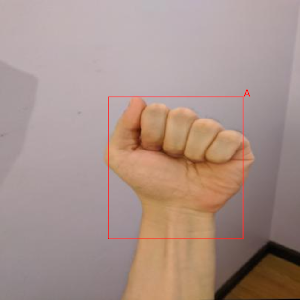
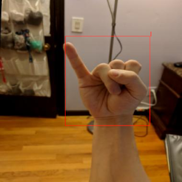

MMDetection is a comprehensive and flexible framework for object detection that offers a wide variety of architectures. Custom docker images with additional tools are available from here:
https://github.com/waikato-datamining/mmdetection
Prerequisites
Make sure you have the directory structure created as outlined in the Prerequisites.
Data
In this example, we will use the American Sign Language Letters dataset, which consists of sets of images of hands, one per letter in the English alphabet (26 labels).
Download the dataset from the following URL into the data directory and extract it:
Once extracted, rename the voc directory to sign-voc.
Now we have to convert the format from VOC XML into MS COCO. We can do this by using the wai.annotations library. At the same time, we can split the dataset into train, validation and test subsets.
From within the applied_deep_learning directory, run the following command:
docker run -u $(id -u):$(id -g) \
-v `pwd`:/workspace \
-t waikatoufdl/wai.annotations:latest \
wai-annotations convert \
from-voc-od \
-i "/workspace/data/sign-voc/*.xml" \
to-coco-od \
-o /workspace/data/sign-coco-split/annotations.json \
--sort-categories \
--category-output-file labels.txt \
--split-names train val test \
--split-ratios 70 15 15
Training
For training, we will use the following docker image:
waikatodatamining/mmdetection:2.24.1_cuda11.1
The training script is called mmdet_train, for which we can invoke the help screen as follows
(unfortunately, we need to set the MMDET_CLASSES environment variable to avoid an exception):
docker run \
-e MMDET_CLASSES= \
-t waikatodatamining/mmdetection:2.24.1_cuda11.1 \
mmdet_train --help
It is good practice creating a separate sub-directory for each training run, with a directory name that hints at
what dataset and model were used. So for our first training run, which will use mainly default parameters, we will
create the following directory in the output folder:
sign-mmdet-fr50
Before we can train, we will need to obtain and customize a config file. Within the container, you can find example configurations for various architectures in the following directory:
/mmdetection/configs
Using the mmdet_config command, we can expand and dump one of these configurations for our
own purposes:
docker run \
-u $(id -u):$(id -g) \
--gpus=all \
-v `pwd`:/workspace \
-v `pwd`/cache:/.cache \
-v `pwd`/cache/torch:/.cache/torch \
-t waikatodatamining/mmdetection:2.24.1_cuda11.1 \
mmdet_config \
/mmdetection/configs/faster_rcnn/faster_rcnn_r50_fpn_1x_coco.py \
> output/sign-mmdet-fr50/faster_rcnn_r50_fpn_1x_coco.py
Open the faster_rcnn_r50_fpn_1x_coco.py file in a text editor and perform the following operations:
- remove any lines before
model = dict( - change
num_classesto 26 - change
dataset_typetoExternalDatasetand any occurrences oftypein thetrain,test,valsections of thedatadictionary - change
data_rootoccurrences to/workspace/data/sign-coco-split(the directory above thetrainandvaldirectories) - change
img_prefixoccurrences toimg_prefix=data_root+'/DIR',withDIRbeing the appropriatetrain,valortest - change
ann_fileoccurrences toann_file=data_root+'/DIR/annotations.json',withDIRbeing the appropriatetrain,valortest - change
max_epochsinrunnerto an appropriate value, e.g., 5 - change
intervalincheckpoint_configto a higher value, e.g., 5
Kick off the training with the following command:
docker run \
-u $(id -u):$(id -g) \
--shm-size 8G \
--gpus=all \
-v `pwd`:/workspace \
-v `pwd`/cache:/.cache \
-v `pwd`/cache/torch:/.cache/torch \
-e MMDET_CLASSES=/workspace/data/sign-coco-split/train/labels.txt \
-t waikatodatamining/mmdetection:2.24.1_cuda11.1 \
mmdet_train \
/workspace/output/sign-mmdet-fr50/faster_rcnn_r50_fpn_1x_coco.py \
--work-dir /workspace/output/sign-mmdet-fr50
Predicting
Using the mmdet_predict script, we can batch-process images placed in the predictions/in directory
as follows (e.g., from our test subset):
docker run \
-u $(id -u):$(id -g) \
--shm-size 8G \
--gpus=all \
-v `pwd`:/workspace \
-v `pwd`/cache:/.cache \
-v `pwd`/cache/torch:/.cache/torch \
-e MMDET_CLASSES=/workspace/data/sign-coco-split/train/labels.txt \
-t waikatodatamining/mmdetection:2.24.1_cuda11.1 \
mmdet_predict \
--checkpoint /workspace/output/sign-mmdet-fr50/latest.pth \
--config /workspace/output/sign-mmdet-fr50/faster_rcnn_r50_fpn_1x_coco.py \
--prediction_in /workspace/predictions/in \
--prediction_out /workspace/predictions/out
Notes
- The predictions get output in ROI CSV format.
- You can view the predictions with the ADAMS Preview browser and, e.g., the ObjectLocationsFromSpreadSheet
handler. You need to configure this generic handler via the
...button, entering the columns for the bounding box (x0,y0,x1,y1) and the label (label_str) of thereader(ObjectLocationsSpreadSheetReader).
Example prediction

